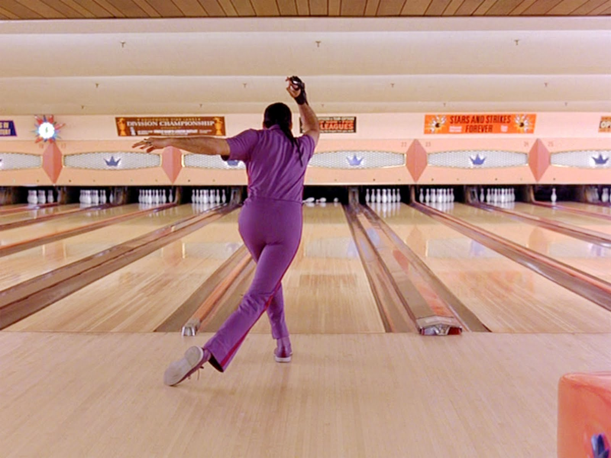

Reflections on Conflict: Bowling problems!

In this post I reflect over a previous conflict and consider how I learned from it, and what was it's source.
27/03/2015
Discuss a time you had a conflict. What was it about? What happened?
One night be and a big bunch of friends went bowling. There were probably about 9 of us in total. We were all really close friends that hang out a good bit. I was really excited to bowl and try and learn the different techniques, I always thought it looked so cool when pros swerve the ball dramatically from right to left before they hit any pins!
I’ll admit too that I was an eager beaver when it came to bowling, and I wanted to get a solid amount of bowling time in. I thought it would be a best to maybe split the group of nine into 3s, and everybody could swap around groups after each game. I was trying to find a balance between bowling loads and hanging out with friends.
One of my best friends, didn’t want to split up the group and he had legitimate reasons too which I understood and respected. To be honest I didn't care too much how we ended up spending the night bowling, if everyone else was happier to just spend time bowling in one big group I wasn't going to force the issue. When I suggested splitting up our groups into smaller numbers and shuffling playing partners after each game, my friend reacted quite confrontationally to the suggestion. Really it should have been a conversation, but it got too heated for no good reason, or so it seemed. We were both expressing our points of view, he didn’t want the group to be split up and I didn't mind splitting it up to bowl more and play with lots of different people.
We both just had different desires, and that was fine and normal but it was the manner in which we began arguing that was beginning to turn into a conflict. I felt like my friend got pretty heated at the suggestion and didn’t think a different point of view made sense. I felt like I understood his point of view and was trying to tell him that I respected it and was happy to do it that way, but I felt like my friend didn't think my point of view made any sense, and he couldn't be convinced to see what my thinking was.
I thought it doesn't make sense to be so heated about something that didn't really matter too much. Then it dawned on me The source of the anger wasn't coming from the suggestion of bowling in smaller groups, it was something else all together, which had happened earlier in the night.
What was the source of the conflict?
I heard at Dev BootCamp you shouldn’t offer feedback unless you are asked for it. To be honest I accepted this piece of advice as having merit without really understanding or considering why that advice makes sense. Despite me not really understanding why this rule makes sense, I began to become aware of this “feedback guideline” throughout my general encounters in life. I began to notice that in general people do receive feedback much more positively when they are open to hearing it. I realized too that some people prefer the enjoyment of working out problems or challenges by themselves without any feedback from others. I thought if you offer someone feedback before they ask then in a way you have deprived them of a learning opportunity to figure things out for themselves, which for the person you are trying to help, could get a little bit frustrating.
I really had to think about this "feedback guideline" of "don't offer feedback unless asked" in order for it to make sense in my head. Because it might make sense to intuitively think that if you have well intentioned feedback for someone which might help them out, then surely the nice and normal thing to do would be to pass on the knowledge which they might find useful. Plus I am always looking for feedback about a better or more effective way to do something. And sometimes I make the mistake of assuming that other people must feel the same way.
During the bowling game I noticed my friend was struggling a little so I recommended a different technique to throw the ball (even though I’m a complete noob, although an enthusiastic one none the less). He didn’t receive the feedback well, and I could tell he was frustrated at receiving the advice which he didn’t ask for.
And then it clicked with me, that for certain people you should be careful with how you offer them feedback. Yes it can be kind, actionable and specific but if they don’t want to hear it, then you offering the feedback will be a source of frustration as opposed to help! Gauging whether someone wants feedback in the first place is actually just as important a skill as offering good feedback.
It clicked with me, that if you offer someone feedback in an area in which they are not doing so well, even though you can be well intentioned, it can be perceived by the person receiving the feedback as a clear and public proof that they are incompetent at whatever it is which you are critiquing. That conflict my friend and I had later had about splitting up the group for bowling should have really been a conversation. But it wasn't because earlier in the night I had made the mistake of offering feedback to a person who at that particular time didn’t really want to hear it. And I was wrong to try and offer it.
What basic emotions did you feel upon analyzing the conflict?
When I analyzed what happened I felt better, since I realized my friend wasn't being disproportionately confrontational for no good reason. Rather he was reacting to feedback which I had given him early on in the night which I was unaware of at the time, was causing him feelings of incompetence and maybe even embarrassment. After this conflict I now appreciate how one should be sensitive to how other people might be feeling before you send them feedback over anything. Sometimes people aren't in a place to hear your well intentioned feedback.
There are no really rules about whens a good time either, it's something you kind of have to feel I think. But as a general guideline, perhaps be reluctant to offer feedback unless asked, or you feel like the person would like to receive it. Check in with them first before offering too.
What actions did you take to resolve your conflict?
The next day I called my friend up, and we hung out with his girlfriend too. I may have told him that I was sorry for being so overly eager with my desire to bowl, but I didn't get into how I was really sorry for offering him feedback when he didn't ask for it. Maybe I should have to in retrospect but I didn't get into it because we were getting on really well anyway. If I thought that the dynamic between us was sour when we hung out that evening I think I would have mentioned it. But I could tell that everything was smooth again when we were hanging out having a laugh.
If you could go back, what would you do differently, if anything?
I didn’t feel bad for wanting to bowl in smaller numbers, I did'nt press the issue and I was open to having the group stick together. I did however feel bad with how I offered my friend feedback when he didn't want to hear it. If I could do it again I know for certain I would have been waaay more sensitive to my friends emotional state before offering constructive feedback on his bowling technique!
What did you learn from this experience?
I appreciated a fact that feedback can be well intentioned and kind, actionable and specific but not everyone want’s to hear feedback at all times. Sometimes it’s better to vibe the mood the person you are talking to is in, and if you really think the feedback would help them and if you think they will receive it well then by all means feel free to share you're well intentioned opinion.